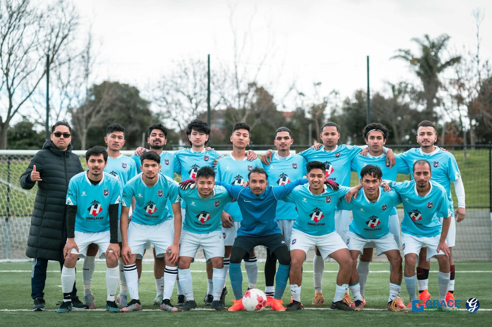

ABOUT US

Welcome to Gurkhas Warriors Football Club, a dynamic and spirited Football club based in the vibrant city of Sydney, New South Wales.
We are proud to be a community-focused organization, driven by our shared love for the beautiful game and the unbreakable bond that brings us together.
As our name suggests, Gurkhas Warriors Football Club draws inspiration from the renowned Gurkhas, known for their bravery, resilience, and unwavering spirit.
We embody these qualities both on and off the field, creating a unique atmosphere that fosters growth, camaraderie, and respect among our members.
Founded with a vision to celebrate diversity and promote inclusivity, Gurkhas Warriors Football Club welcomes players of all backgrounds, skill levels, and ages.
We believe that soccer has the power to transcend cultural boundaries, bringing people from various walks of life together under the common goal of pursuing
their passion for the sport.
At Gurkhas Warriors, we place a strong emphasis on community engagement, striving to make a positive impact beyond the boundaries of the soccer field. We
actively collaborate with local organizations, schools, and charities to support initiatives that promote physical fitness, teamwork, and social development
among the youth. Our club is committed to providing a nurturing environment for our members to grow as athletes, individuals, and community leaders. Under the guidance of our experienced coaches, players receive top-notch training, honing their technical skills, tactical awareness, and physical abilities. Beyond the competitive aspect of the game, we also prioritize instilling core values such as sportsmanship, fair play, and perseverance.
As a member of Gurkhas Warriors Football Club, you become part of a tightly knit family that shares a common goal: to excel both on and off the field. We
organize regular friendly matches, local tournaments, and exciting social events to foster strong bonds among our players, families, and supporters. Together,
we celebrate victories, learn from defeats, and build lifelong friendships that extend far beyond the game.
Whether you are a seasoned player looking for a new challenge or a passionate beginner seeking to embark on a soccer journey, Gurkhas Warriors Football Club
welcomes you with open arms. Join us as we continue to make our mark in the soccer community, representing Sydney and New South Wales with pride and passion.
Come and experience the exhilaration of playing for Gurkhas Warriors Football Club, where unity, diversity, and the love for the game converge to create an
exceptional soccer community like no other.